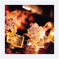
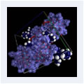
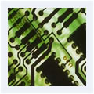
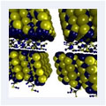
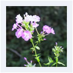
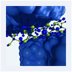

Learn About

 
  
Welcome to the Educational Content of Reciprocal Net! The primary goal of these websites is to provide students of all levels, teachers, and the general public with valuable insights into the fascinating world of crystallography, chemistry, and related sciences.
The heart of these web pages is an ever-growing collection of Common Molecules that presents general and crystallographic information on compounds encountered in daily life. Innovative visualizing tools provide a valuable glimpse into structural details of those substances. Advanced tools and crystallographic data are available for the professional research chemist.
In a second part, information on the theory of crystallization and practical approaches are compiled. For the young scientists, a Crystal growth DIY is included, describing crystallization experiments with chemicals commonly used at home. For chemists and professional crystallographers, mounting techniques for problem crystals are illustrated and explained. For further reading other valuable sources in the literature and on the web are listed. A crystallography tutorial aimed at students in chemistry and biology will be included in the near future.
|